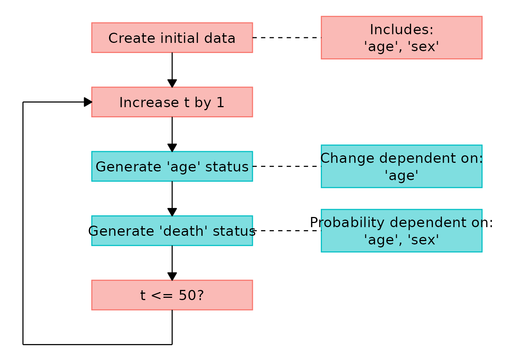

Simulating Data using a Discrete-Time Approach
Robin Denz
Source:vignettes/v_sim_discrete_time.Rmd
v_sim_discrete_time.RmdIntroduction
In this small vignette, we introduce the
sim_discrete_time() function, which can be used to generate
arbitrarily complex longitudinal data with discrete points in time. Just
as the sim_from_dag() function contained in this package,
it allows any mixture of continuous, binary, categorical, count, or
time-to-event data. The main advantage of the
sim_discrete_time() function is that it naturally generates
longitudinal data without the need to define a node for each variable at
each point in time. It also makes the generation of complex
time-to-event data a lot easier. Features such as time-dependent
effects, time-dependent covariates, any form of censoring,
recurrent-events and competing events may be included in a
straightforward fashion.
What is Discrete-Time Simulation and Why Use it?
A discrete-time simulation (DTS) consists of two steps. First, a
bunch of entities (usually but not necessarily people) are created.
Afterwards, the change of the states of these entities over time is
simulated by increasing the simulation time iteratively in discrete
steps, updating the states at each step (Tang et al. 2020). For example,
suppose that the entities are people and that we are interested in the
states age and death. Every time the
simulation time increases, the age of each person increases
with it, raising the probability of death. At every step we check if
each person is still alive. If they die, the state of death
changes from 0 to 1. If everyone is dead, we stop the simulation. The
schematic flow of DTS is shown in the figure below.

A generalized flow-chart of the discrete-time simulation approach
The sim_discrete_time() directly implements this
workflow. A data set at
is either simulated using the sim_from_dag() function or
supplied directly by the user (using the t0_data argument).
This data set is then updated according to the time-dependent nodes
added to the dag using node_td() calls. Below
we give a short example on how this works in practice. A more realistic
(and therefore more complex) example can be found in a different
vignette.
A DTS can be seen as a special case of simulation modeling. It is
closely related to dynamic microsimulation (Spooner et
al. 2021), discrete-event simulation (Banks 2014) and
agent-based modeling (Ugur & Saka 2006). As such, it
requires a lot of input from the users. In general, the
sim_discrete_time() function is not an “off-the-shelves”
function which can be used “as-is” to simulate data. In most cases, the
user needs to write their own functions to actually use this function
effectively. This is the price one has to pay for the nearly unlimited
flexibility of this simulation methodology. Nevertheless, it may be the
only valid simulation strategy when the user is interested in highly
complex longitudinal time-to-event data.
Defining the DAG
Similar to the sim_from_dag() function, the user needs
to specify the nodes of the underlying causal DAG to use this function.
All variables in a DTS can be categorized into three categories:
t0_root nodes, t0_child_nodes and
tx_nodes.
t0_root_nodes: Variables that are completely independent of all other variables and are only generated once are called t0_root_nodes. This could be something like sex or geographic entities. They are generally simply sampled from some previously defined distribution, but they could also be sampled directly from existing data. The prefix t0_ indicates that these variables are created only once in the beginning.
t0_child_nodes: Much like t0_root_nodes, the t0_child_nodes are also variables that are generated only once in the beginning of the discrete-time simulation. The only difference is, that these variables are not simply sampled from a defined distribution. Instead they causally depend in some way on other variables. Those other variables can be root nodes or other child nodes, as long as the underlying causal structure can be described as a directed acyclic graph.
tx_nodes: This type of node is more complex and is the reason to use DTS. Variables in this category are updated at each step in time of the simulation process. These updates can be fairly easy, such as increasing the age of a person by one time unit on each step, or they can be very complex. For example, if we want to model the occurrence of some kind of time-dependent-event, we can generate the probability of that occurrence at each step depending on other variables in the simulation model or past states of the variable itself.
The t0_root_nodes and t0_child_nodes
arguments are specified using a DAG object and calls to the
node() function as usual when using the
sim_from_dag() function. In fact, they are simply passed to
it under the hood. Their role in the data generation process is only to
obtain the initial data set we need for
.
It would be equivalent to call the sim_from_dag() function
manually and then pass the output to the t0_data argument.
We therefore won’t go into more detail here. More information about how
to correctly specify this DAG can be found in the documentation of the
sim_from_dag() and node() functions or the
associated vignette.
A Simple Example - One Terminal Event
Let us consider a very simple example first. Suppose we want to generate data according to the following causal DAG:

A small DAG with time-varying age
Here, sex is a time-invariant variable, whereas
age and death are not. Suppose that each tick
of the simulation corresponds to a duration of one year. Then,
naturally, people will age one year on every simulation tick. We assume
that sex and age have a direct causal effect
on the probability of death, regardless of the time. Once people are
dead, they stay dead (no reincarnation allowed).
If we want to use this structure in the
sim_discrete_time() function, we first have to generate an
initial dataset for the state of the population at
as described above. We do this by first specifying the
t0_root_nodes as follows:
library(data.table)
library(ggplot2)
#> Error in get(paste0(generic, ".", class), envir = get_method_env()) :
#> object 'type_sum.accel' not found
library(simDAG)
dag <- empty_dag() +
node("age", type="rnorm", mean=30, sd=5) +
node("sex", type="rbernoulli", p=0.5)We assume that age is normally distributed and that we
have equal numbers of each sex. This information is enough
to specify the data set at
.
Now we only need to add additional time-dependent nodes using the
node_td() function and we are ready. First, we define a
function that increases the age of all individuals by 1 at each
step:
node_advance_age <- function(data) {
return(data$age + 1)
}Next, we need to define a function that will return the probability
of death for every individual at time
,
given their current age and their sex. We use
a logistic regression model, but make it explicit for exemplary
reasons:
prob_death <- function(data) {
score <- -10 + 0.15 * data$age + 0.25 * data$sex
prob <- 1/(1 + exp(-score))
return(prob)
}Now we can add those nodes to the DAG as follows:
dag <- dag +
node_td("age", type="advance_age", parents="age") +
node_td("death", type="time_to_event", parents=c("age", "sex"),
prob_fun=prob_death, event_duration=Inf, save_past_events=TRUE,
check_inputs=FALSE)We simply pass the node_advance_age() function to the
type argument of the age node.
death is a time-to-event node, because it’s an
event which is generated from a probability at each step in time. That
probability, as defined here, is determined by the
prob_death function we defined earlier. We set
event_duration to Inf to make this a permanent
event (once you are dead, there is no going back).
To visualize the resulting DAG, we can use the associated
plot() method:
plot(dag)
#> Loading required namespace: ggforce
To finally generate the desired data, we simply call the
sim_discrete_time() function:
set.seed(43)
sim_dat <- sim_discrete_time(n_sim=10, dag=dag, max_t=50, check_inputs=FALSE)By setting max_t=50, we are letting this simulation run
for 50 (simulated) years. The results look like this:
head(sim_dat$data)
#> age sex death_event death_time .id
#> <num> <lgcl> <lgcl> <int> <int>
#> 1: 79.81243 TRUE TRUE 27 1
#> 2: 72.12698 TRUE TRUE 13 2
#> 3: 77.57016 FALSE TRUE 31 3
#> 4: 82.32593 FALSE TRUE 16 4
#> 5: 75.47951 FALSE TRUE 17 5
#> 6: 78.61284 FALSE TRUE 9 6It is easy to see that all people died over the course of those 50
years by looking at the death_event column. The
death_time column records the time at which each person
died.
If we want to graphically display a flow diagram of the
data-generation mechanism, we may use the plot() method
associated with the output of the sim_discrete_time()
function like this:
plot(sim_dat)
This particular example could be simulated in a much easier fashion,
without relying on a discrete-time approach, because age
increases linearly and the model for death is exactly the
same regardless of time. DTS is more useful when truly complex data
structures are required. Below we will extend this simple example a
little bit, but we will still keep it relatively simple.
Extending the Simple Example - Recurrent Events
Suppose that the event of interest wasn’t death, but a
cardiovascular event (cve). For the case of simplicity we
will assume that the same causal structure and causal coefficients from
above still apply, but that the event is now no longer terminal and may
re-occur an arbitrary number of times. First, let’s redefine the nodes
to get the new name right:
dag <- empty_dag() +
node("age", type="rnorm", mean=30, sd=5) +
node("sex", type="rbernoulli", p=0.5)We also redefine the function that generates the required event probabilities:
prob_cve <- function(data) {
score <- -15 + 0.15 * data$age + 0.25 * data$sex
prob <- 1/(1 + exp(-score))
return(prob)
}Now, all we have to do in this case is change some arguments of the
node_time_to_event() function:
dag <- dag +
node_td("age", type="advance_age", parents=c("age")) +
node_td("cve", type="time_to_event", parents=c("age", "sex"),
prob_fun=prob_cve, event_duration=1, save_past_events=TRUE)Apart from changing the node name, we also changed the
event_duration parameter to 1, meaning that a
cardiovascular event only lasts 1 year. We also set
save_past_events to TRUE in order to store the
possible recurrent events. Now we call the
sim_discrete_time() function as before:
sim_dat <- sim_discrete_time(n_sim=10, dag=dag, max_t=50)
head(sim_dat$data)
#> age sex cve_event cve_time .id
#> <num> <lgcl> <lgcl> <int> <int>
#> 1: 82.67833 TRUE FALSE NA 1
#> 2: 90.30020 FALSE TRUE 50 2
#> 3: 88.25512 TRUE FALSE NA 3
#> 4: 90.28344 FALSE FALSE NA 4
#> 5: 79.90450 TRUE FALSE NA 5
#> 6: 81.70720 TRUE FALSE NA 6In this case, the data is a little more complex. At time
,
only one person is currently experiencing a cardiovascular event, which
is why the cve_event column is FALSE in almost
all rows and the cve_time column is NA in
almost all rows. We need to transform this output data into different
formats using the sim2data() function to gain more
information.
For example, we can transform it into the start-stop format:
d_start_stop <- sim2data(sim_dat, to="start_stop")
head(d_start_stop)
#> .id start stop cve age sex
#> <int> <int> <num> <lgcl> <num> <lgcl>
#> 1: 1 1 50 FALSE 82.67833 TRUE
#> 2: 2 1 43 FALSE 90.30020 FALSE
#> 3: 2 44 44 TRUE 90.30020 FALSE
#> 4: 2 45 49 FALSE 90.30020 FALSE
#> 5: 2 50 50 TRUE 90.30020 FALSE
#> 6: 3 1 50 FALSE 88.25512 TRUEIn this format, we can clearly see when the events occurred. This
type of format is usually used to fit statistical models for
time-to-event data (although before fitting those, you might want to
take a look at the target_event, overlap and
keep_only_first arguments of sim2data()).
Another possibility is to transform it into the long-format:
d_long <- sim2data(sim_dat, to="long")
head(d_long)
#> Key: <.id, .time>
#> .id .time cve age sex
#> <int> <int> <lgcl> <num> <lgcl>
#> 1: 1 1 FALSE 82.67833 TRUE
#> 2: 1 2 FALSE 82.67833 TRUE
#> 3: 1 3 FALSE 82.67833 TRUE
#> 4: 1 4 FALSE 82.67833 TRUE
#> 5: 1 5 FALSE 82.67833 TRUE
#> 6: 1 6 FALSE 82.67833 TRUEThis may also be useful to fit discrete-time survival models.
The simulation done here assumes that the time and number of previous
events has no effect on any further events of the patient. This
assumption may be relaxed by explicitly formulating the
prob_cve function in a way that it uses the
cve_time column to change the probability of further
events. A more in-depth example that includes considerations like these
can be found in the third vignette of this package.
References
Banks, Jerry, John S. Carson II, Barry L. Nelson, and David M. Nicol (2014). Discrete-Event System Simulation. Vol. 5. Edinburgh Gate: Pearson Education Limited.
Bilge, Ugur and Osman Saka (2006). “Agent Based Simulations in Healthcare”. In: Ubiquity: Technologies for Better Health in Aging Societies - Proceedings of MIE2006. Ed. by Arie Hassman, Reinhold Haux, Johan van der Lei, Etienne De Clercq, and Francis H. Roger France. IOS Press.
Spooner, Fiona, Jesse F. Abrams, Karyn Morrissey, Gavin Shaddick, Michael Batty, Richard Milton, Adam Dennett, Nik Lomax, Nick Malleson, Natalie Nelissen, Alex Coleman, Jamil Nur, Ying Jin, Rory Greig, Charlie Shenton, and Mark Birkin (2021). “A Dynamic Microsimulation Model for Epidemics”. In: Social Science & Medicine 291.114461.
Tang, Jiangjun, George Leu, und Hussein A. Abbass. 2020. Simulation and Computational Red Teaming for Problem Solving. Hoboken: IEEE Press.